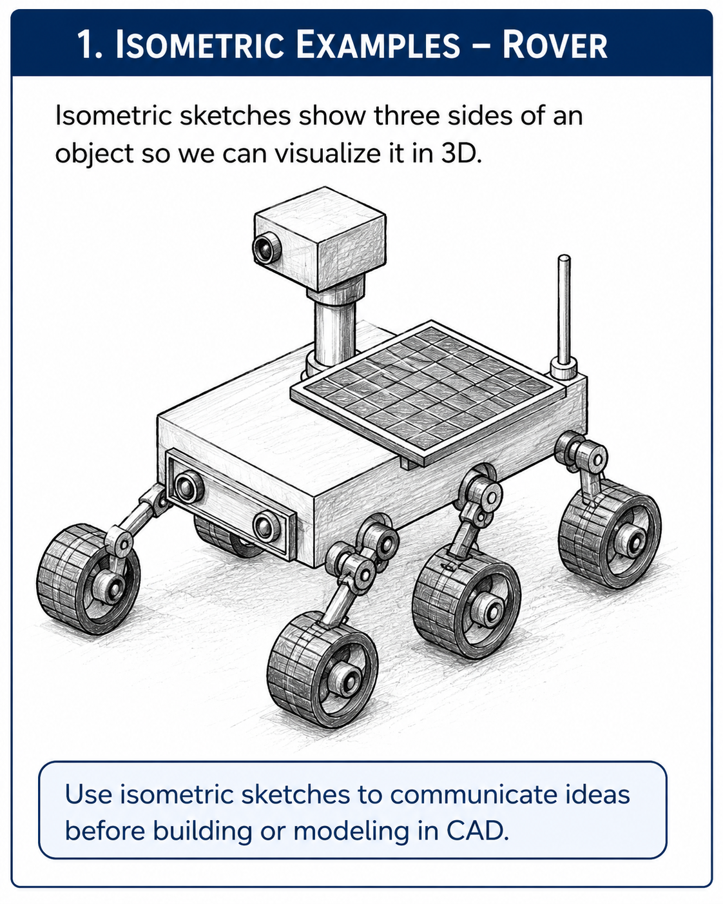
Rover Isometric Sketch
Concept sketching and visual communication
Open ImageStudents learn to communicate engineering designs through sketching, measurement, tolerances, assembly documentation, BOMs, change records, and final proposal presentations.
| Lesson | Title | Focus Question |
|---|---|---|
| 1.1 | Why Engineers Sketch | Why do engineers sketch before they build or model in CAD? |
| 1.2 | Line Conventions | How do different types of lines help engineers communicate clearly? |
| 1.3 | Object Lines & Hidden Lines | How can a sketch show features that are part of an object but cannot be seen from one view? |
| 1.4 | Centerlines & Symmetry | How do engineers show the center of a feature or object in a technical sketch? |
| 1.5 | Isometric Sketching | How can engineers show a 3D object clearly on a flat page? |
| 1.6 | Isometric Circles, Arcs, and Shading | How can engineers show curved features and surface depth in an isometric sketch? |
| 1.7 | Orthographic Projection | Why do engineers use multiple 2D views instead of only one 3D sketch? |
| 1.8 | Top, Front & Right Side Views | How do engineers keep multiple views of the same object organized and accurate? |
| 1.9 | Dimensioning Basics | How do engineers show the size of an object clearly in a drawing? |
| 1.10 | Aerospace Bracket Sketch | How can engineers communicate the shape, features, and size of a part before it is modeled or built? |
| 1.11 | Rocket Assembly Reverse Engineering | How can engineers learn from an existing rocket assembly by carefully taking it apart? |
| 1.12 | Why Documentation Matters | Why is a design not finished when the sketch or model is finished? |
| 1.13 | Measurement Tools | How do engineers choose the right tool for accurate measurement? |
| 1.14 | Tolerances | Why do engineers allow some variation in measurements, but not too much? |
| 1.15 | Adhesives & Fasteners | How do engineers decide the best way to connect parts together? |
| 1.16 | Rocket Assembly Systems | How do multiple rocket parts work together as one assembly? |
| 1.17 | Documenting the Rocket Assembly | What information does someone need to understand or recreate the rocket assembly? |
| 1.18 | Rocket Exploded View | How can engineers show rocket parts separated without losing how they fit together? |
| 1.19 | Rocket Bill of Materials | How do engineers keep track of every part needed to build an assembly? |
| 1.20 | Rocket Assembly Notes | How do engineers write reassembly instructions that another team can follow? |
| 1.21 | Engineering Change Requests | How do engineers document a proposed design change without losing control of the original design? |
| 1.22 | Final Rocket Assembly Proposal Presentation | How can a team justify a proposed rocket assembly improvement using engineering evidence? |
Original classroom images for sketching, measurement, and rocket documentation lessons.

Concept sketching and visual communication
Open Image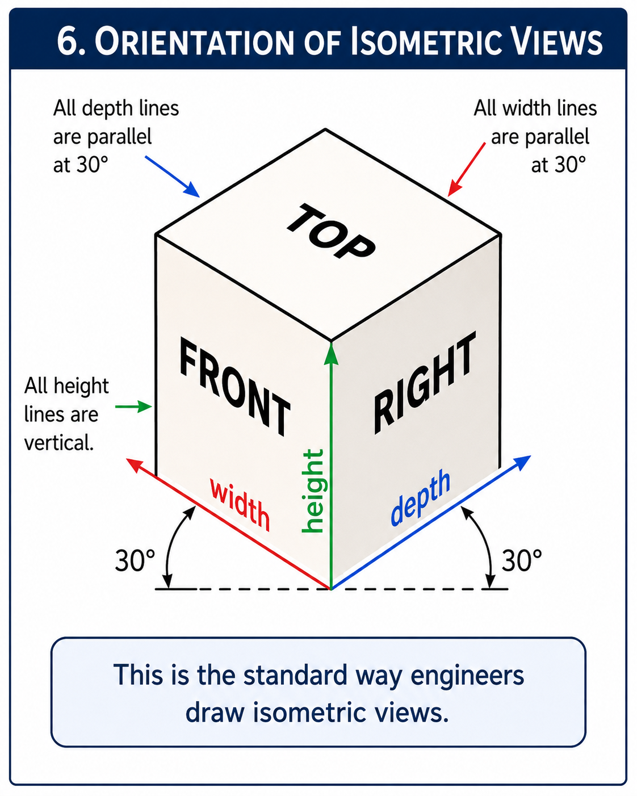
Width, height, depth, and isometric directions
Open Image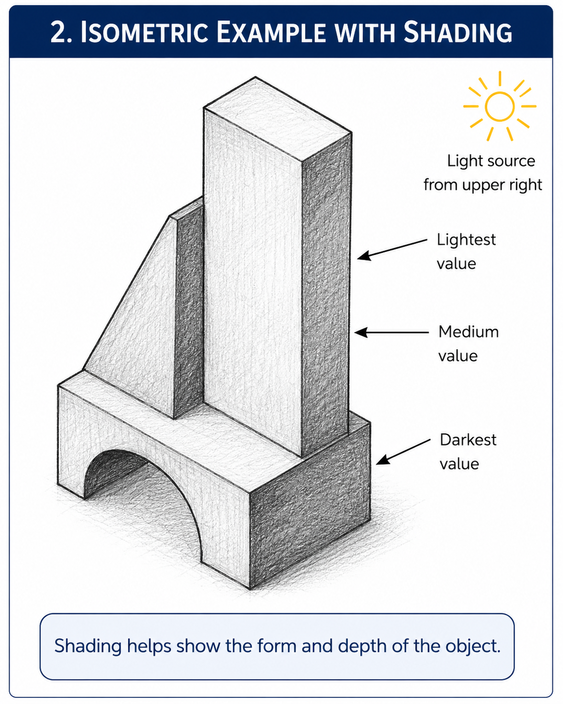
Surface value and 3D form
Open Image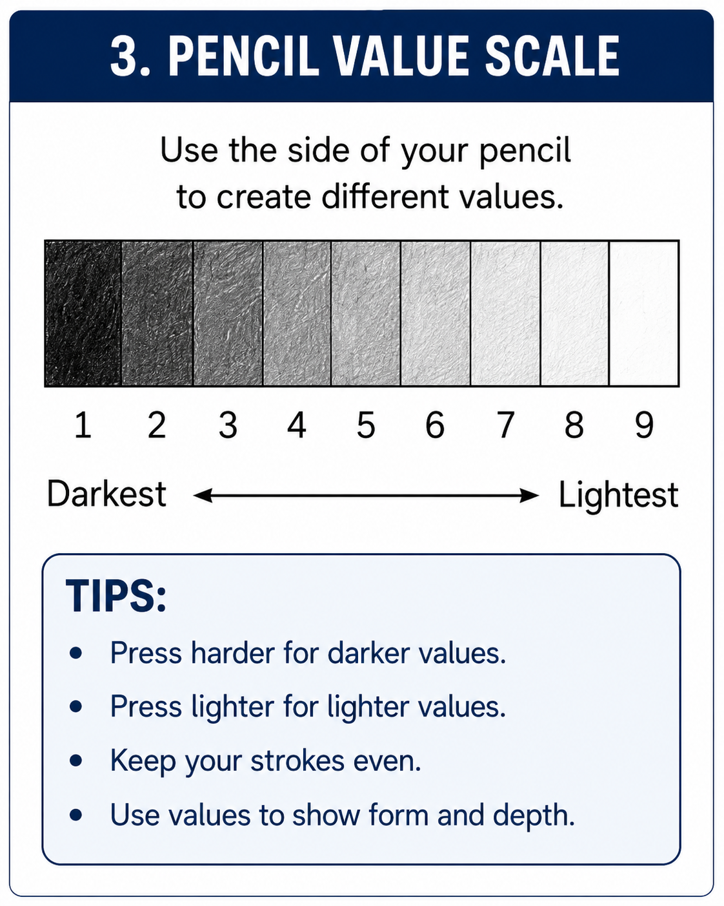
Shading and pencil pressure practice
Open Image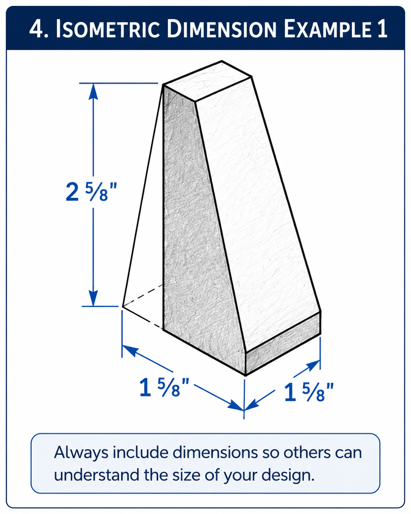
Dimension and extension lines
Open Image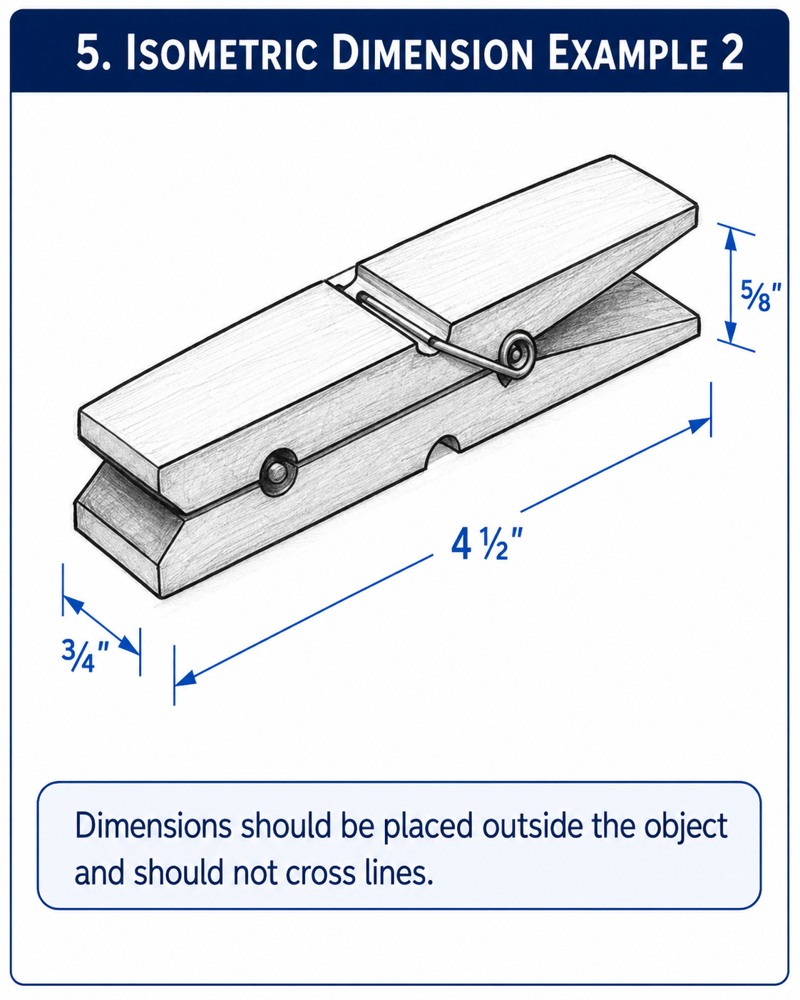
Dimension placement and feature callouts
Open Image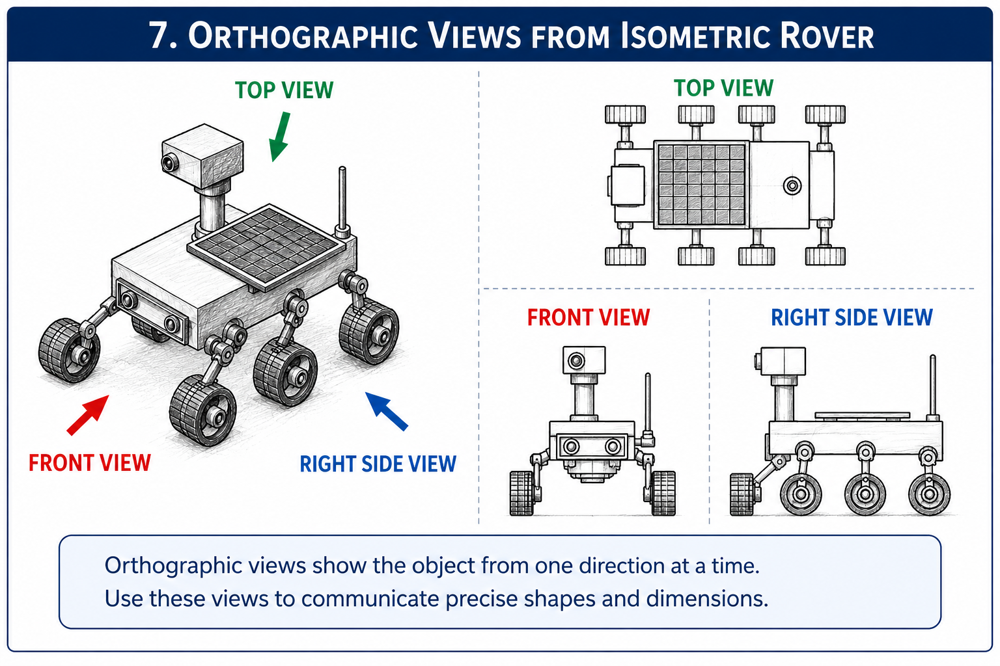
Front, top, and right-side views
Open Image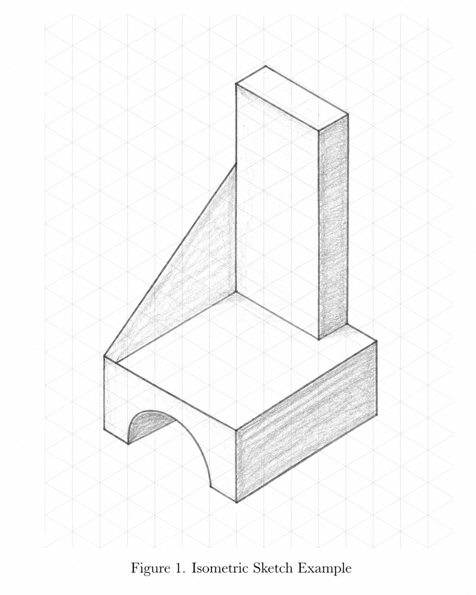
Applied bracket sketching
Open Image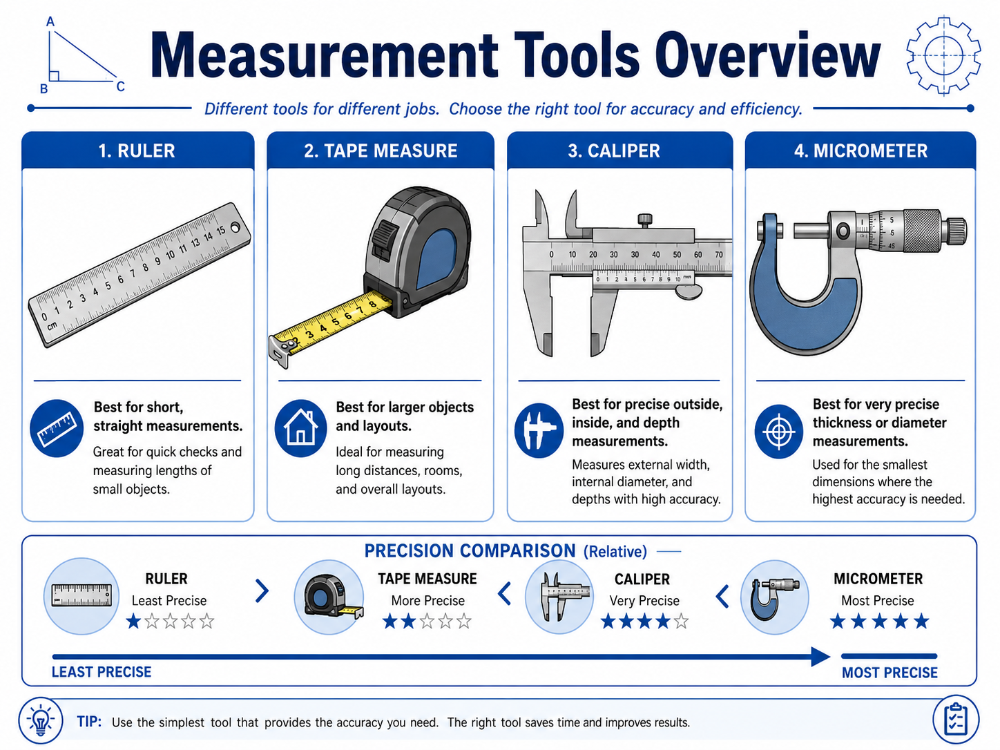
Ruler, tape measure, calipers, and micrometer comparison
Open Image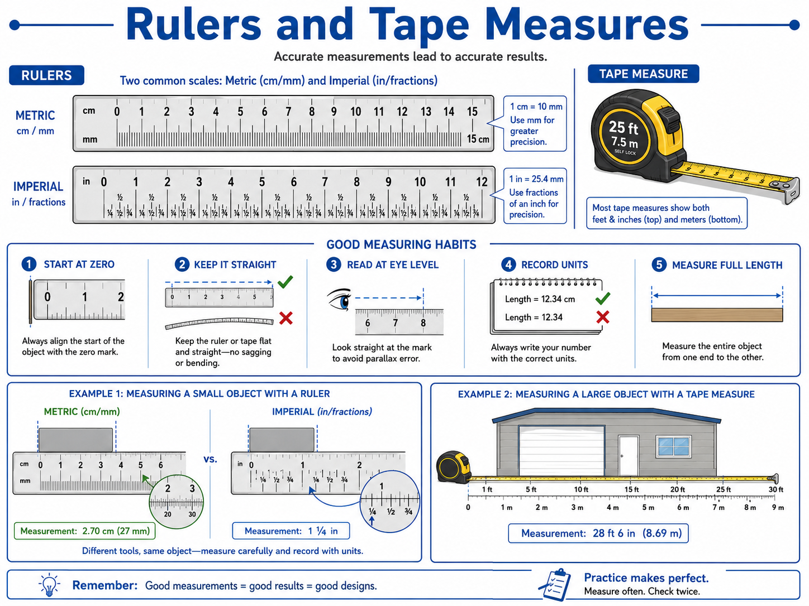
Good habits for ruler and tape measure use
Open Image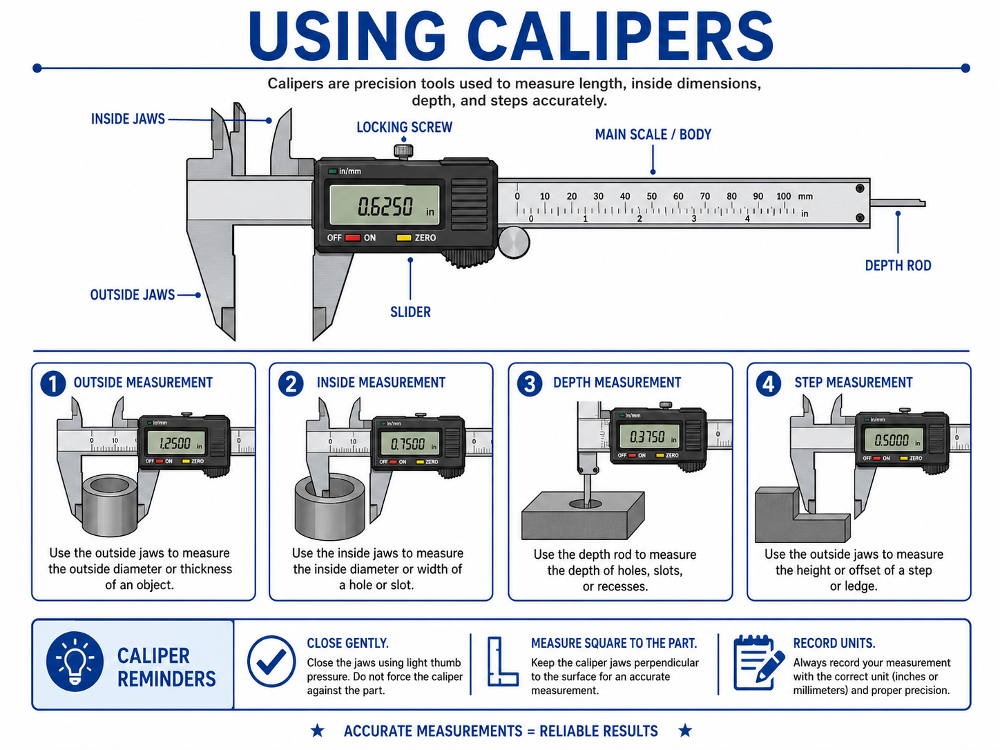
Outside, inside, depth, and step measurement
Open Image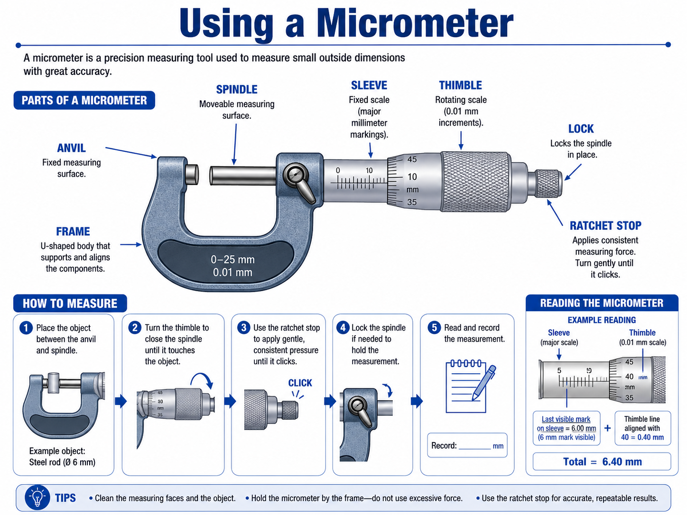
Precise thickness and diameter measurement
Open ImageUse these resources with the Unit 1 lessons.
Use for 3D technical sketching and concept visualization.
Open ResourceUse for top, front, right, and isometric view practice.
Open ResourceRecord repeated measurements, units, and observations.
Open ResourceDocument rocket parts, quantities, materials, and notes.
Open ResourceDocument proposed rocket assembly changes and impacts.
Open ResourceReference for exploded views, callouts, BOMs, and assembly clarity.
Open Resource